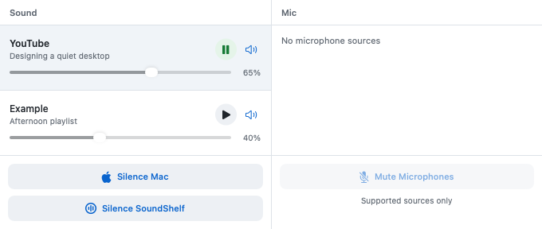

Keep paused players handy
Qualifying loaded and paused players stay visible. Click a source’s name to open its exact tab or app.
Free and open source · macOS
Play, pause, adjust volume, and find the tab behind the sound. SoundShelf brings browser media, Spotify, and Music into one native macOS panel.
Early source release. Build locally; no notarized installer yet.

Qualifying loaded and paused players stay visible. Click a source’s name to open its exact tab or app.
Play/pause, mute, and adjust volume for supported media. Browser tabs and profiles remain separate.
Sound controls don’t change your microphone. Unsupported or unknown mic states stay disabled.
The extension connects your browser to SoundShelf. Its popup shows connection status and your extension ID, with a Reconnect button.
The playback controls live in your Mac’s menu bar. The browser popup is just for the connection.
Browser setup instructions ↗Declared requirements: macOS 13+, Swift 5.9+, and Python 3.8+ for browser integration. Not every OS/browser combination has been tested.
git clone https://github.com/RastogiAbhijeet/sound-shelf.git
cd sound-shelf
sh scripts/build-app.sh
open dist/SoundShelf.appLook for SoundShelf’s wave-ring icon in the menu bar. To connect browser tabs, load the unpacked companion and register its extension ID using the setup guide.
Full setup guide ↗Restore session-owned master sound mutes before quitting. Builds use ad hoc signing.